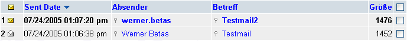

| Die Inbox ist der Ordner, in den Ihre Mails geladen werden, wenn Sie nichts anderes angegeben haben (siehe
Filtereinstellungen
um mehr über die Weiterleitung der Mails zu erfahren). Wenn Sie Mails erhalten haben, werden diese in einer Liste angezeigt:

Die erste Spalte repräsentiert den Status der Nachricht. Der
goldene, geschlossene Umschlag bedeutet, dass diese Mail noch nicht
gelesen wurde. In diesem Fall wird die gesamte Zeile 'fett'
dargestellt. Der Umschlag der zweiten Nachricht ist weiß und offen. Das
bedeutet, diese Nachricht wurde bereits gelesen. In diesem Fall wird
die Zeile nicht 'fett' dargestellt. Man kann den Status der Nachricht ändern, indem man auf den Umschlag drückt. Wenn der Status der Nachricht "gelesen" ist, wird er auf "ungelesen" gesetzt und umgekehrt.
Die zweite Spalte ist das Datum, an welchem die Nachricht erhalten wurde. Das Datumsformat, in diesem Fall MM/DD/YY, (siehe Darstellungseinstellungen
um mehr darüber zu erfahren). Hier wird auch die Uhrzeit angezeigt, zu
welcher die Mail erhalten wurde, in diesem Fall ein 24-Stunden-Format.
Dies kann ebenfalls in den Darstellungseinstellungen
geändert werden.
Absender ist, wer die Mail geschickt hat. Um eine Nachricht an diese Person zu schreiben, siehe Verfassen einer Nachricht.
Betreff ist der Betreff, der vom Absender festgelegt wurde.
Dies sollte einen kurzen Überblick über den Inhalt der Nachricht geben.
Klickt man auf den Betreff, kann man die Nachricht lesen. Klickt z.B.
der Benutzer auf Testmail (siehe oben), wird er/sie zu der Nachricht weitergeleitet und sieht dies dann mit dem ganzen Text.
Größe der Nachricht in Bytes,
welche die Nachricht auf dem Server an Platz verbraucht.
Die Checkbox in der letzten Spalte ist für die Selektion der
Nachricht und folgende Aktionen damit. Beim Klicken der Checkbox
erscheint ein kleines Häkchen in der Checkbox. Ein weiterer Klick
löscht das Häkchen wieder. Beim Klicken der Überschrift für die
Checkboxen (rechts neben Größe) werden alle Checkboxen ausgewählt.
Dieses Tool ist zur Verwendung ausgewählter Nachrichten. Mehr darüber
im Bereich "Benutzung der Toolbar". |